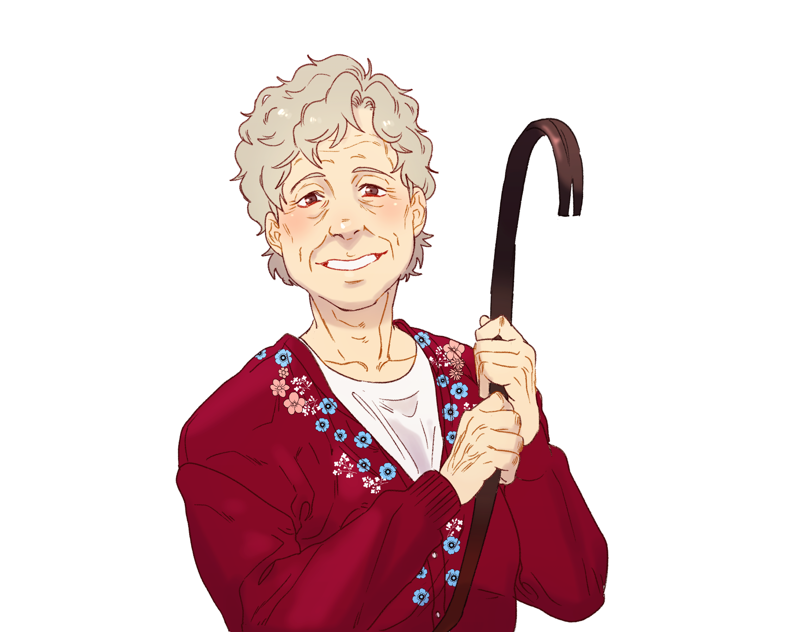

캐치 프레이즈
교통약자석 어르신이 힘을 숨기고 있는 듯하다
한마디
“ 아유, 말만 혀! 이 할미가 다~해결해줄 테니께. ”
외관
(*커미션 : @dmavy_com)
곱슬거리는 잿빛 머리카락과 갈색 눈, 처진 눈매에 얼굴에는 주름이 자글자글하다. 동네에서 한 번쯤 봤을 법한 유한 인상의 어르신으로 흰색 라운드 티와 꽃자수가 놓인 붉은색 가디건, 검은색 냉장고 바지와 아이보리색 운동화와 같이 활동하기에 적합하고 편안한 옷차림을 하고 있다.
이름
장금화
나이
71세
키/체중
162cm/56kg
성격
Keyword: 온화한 / 오지랖 넓은 / 추진력 있는
동네 주민들은 화를 내는 모습을 본 적이 없다고 말할 정도로 온화한 성품을 지녔다. 과거에는 대화로 좋게 좋게 해결하면 될 일인데 왜 그렇게 열을 내냐며 사람들의 갈등을 중재 및 해결해 줄 때가 종종 있었기 때문에 마을의 이장을 추천받기도 했다.
고립된 상황을 불편해하는 것인지 오지랖이 넓은 편이다. 초면에 대뜸 저녁 메뉴를 묻고 요리를 추천을 해준다거나 고민이 있다면 들어주겠다며 말을 붙이는데 이를 귀찮아하는 사람도 적잖다. 한번 붙잡혔다가 가족 인적사항까지 모두 털렸다는 소문이 돌 정도.
추진력이 상당하다. 평소에는 느긋한 여유를 즐기지만 목표가 하나 세워지면 어려움을 돌파하면서까지 그 목표를 향해 나아가려고 한다. 이때, 과거의 모습을 엿볼 수 있다는데…
기타
장금화
생년월일 - 1951.10.21
직업 - 무직. 2년 전까지 방앗간 사장으로 일했다. 가게는 은공역과 가깝고 참기름 한방울까지 싹싹 긁어 병에 넣어주는 양심있는 장사로 유명했다고.
가족 - 배우자 없음, 여동생 하나. 방앗간 가게를 물려줄 정도로 사이가 나쁘지 않은 편. 별거중이며 종종 만난다.
주거 - 태산역 근처 작은 단독주택에서 홀로 살고 있다. 동네 주민들과의 교류는 원만하지만 그리 깊지 않아 보인다.
관리 - 꾸준히 관리를 해 나이에 비해 자세가 바르고 체력과 힘도 젊은이 못지 않은 편이다.
호 - 자연. 비가 내리는 날씨. 산책과 가벼운 운동. 고소하고 단 음식.
불호 - 건조한 날씨. 담배. 떡과 매운 음식.
하루일과, 그리고 지하철
여느 때와 다름없이 아침 체조를 하며 기상. 2년 전까지는 방앗간으로 출근을 나갔지만 동생에게 물려준 뒤로는 가까운 동네로 마실을 나갑니다.
지나가는 이웃들에게 안부를 묻기도 하고, 뒷산으로 올라가 각종 약초를 캐내기도 하며 하루하루를 보내지만… 이렇게 무더운 날씨에는 지하철만한 곳도 없죠. 별다른 휴식처를 찾지 못한 장금화 어르신은 오늘도 종점여행을 떠납니다. 종점에서 종점, 왕복으로 두 번.
바삐 살아가는 여러 사람들을 눈에 담으며 바깥 풍경을 구경하는 일은 어르신의 소소한 낙입니다. 교통약자석에 앉아 보호자에게 칭얼거리는 어린 아이에게 사탕을 건네주기도 하고, 다리를 다쳐 깁스를 한 청년에게 자리를 내어주기도 하며 인연을 쌓아갑니다.
따로 연락을 주고받지는 않지만 아주 잠깐의 만남이 소중한 추억이 되어 살아갈 힘을 불어넣어 주는 법이지요.
오늘도 그런 날이 될 것이라고- 믿어 의심치 않았습니다.
소지품
보따리
약초를 채집할 때나 장을 볼 때 주로 사용한다.
누룽지 알사탕
당이 떨어질 때마다 하나씩 주머니에서 꺼내먹는 간식.
관계
-